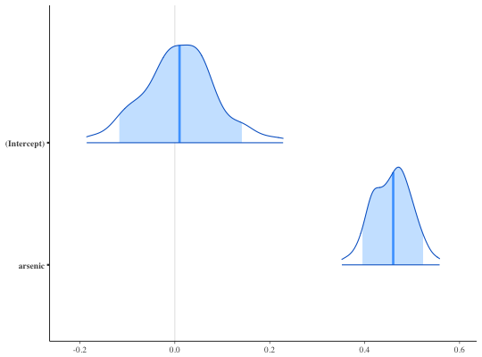
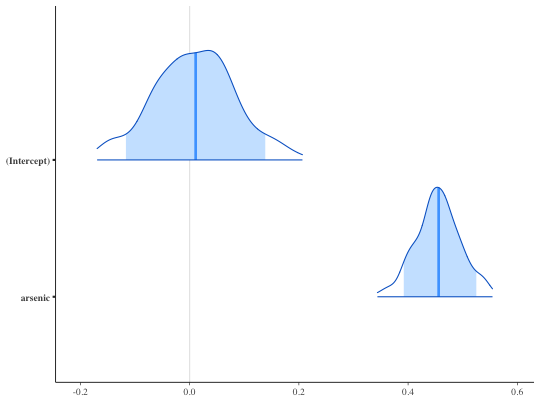
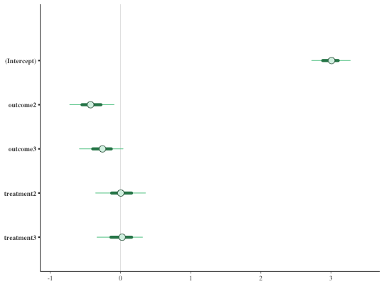
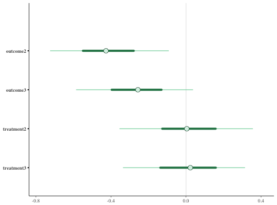
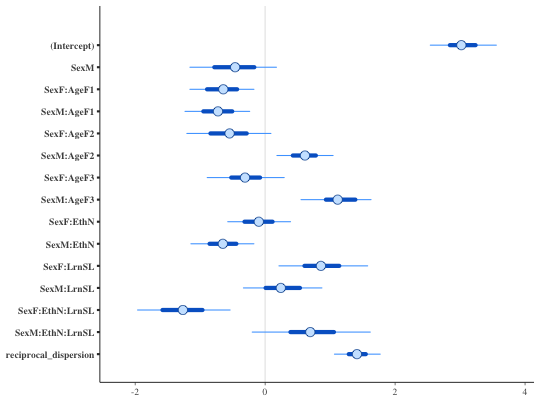
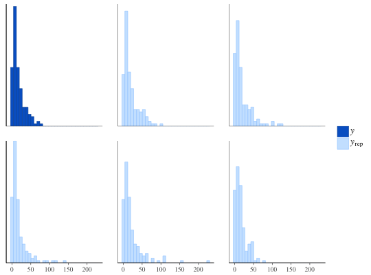

Bayesian generalized linear models via Stan
Generalized linear modeling with optional prior distributions for the coefficients, intercept, and auxiliary parameters.
stan_glm(formula, family = gaussian(), data, weights, subset, na.action = NULL, offset = NULL, model = TRUE, x = FALSE, y = TRUE, contrasts = NULL, ..., prior = normal(), prior_intercept = normal(), prior_aux = cauchy(0, 5), prior_PD = FALSE, algorithm = c("sampling", "optimizing", "meanfield", "fullrank"), adapt_delta = NULL, QR = FALSE, sparse = FALSE) stan_glm.nb(formula, data, weights, subset, na.action = NULL, offset = NULL, model = TRUE, x = FALSE, y = TRUE, contrasts = NULL, link = "log", ..., prior = normal(), prior_intercept = normal(), prior_aux = cauchy(0, 5), prior_PD = FALSE, algorithm = c("sampling", "optimizing", "meanfield", "fullrank"), adapt_delta = NULL, QR = FALSE) stan_glm.fit(x, y, weights = rep(1, NROW(x)), offset = rep(0, NROW(x)), family = gaussian(), ..., prior = normal(), prior_intercept = normal(), prior_aux = cauchy(0, 5), prior_ops = NULL, group = list(), prior_PD = FALSE, algorithm = c("sampling", "optimizing", "meanfield", "fullrank"), adapt_delta = NULL, QR = FALSE, sparse = FALSE)
Arguments
| formula, data, subset | Same as |
||||||||||
|---|---|---|---|---|---|---|---|---|---|---|---|
| family | Same as |
||||||||||
| na.action, contrasts | Same as |
||||||||||
| model, offset, weights | Same as |
||||||||||
| x, y | In |
||||||||||
| ... | Further arguments passed to the function in the rstan
package ( |
||||||||||
| prior | The prior distribution for the regression coefficients.
See the priors help page for details on the families and
how to specify the arguments for all of the functions in the table above.
To omit a prior ---i.e., to use a flat (improper) uniform prior---
|
||||||||||
| prior_intercept | The prior distribution for the intercept.
|
||||||||||
| prior_aux | The prior distribution for the "auxiliary" parameter (if
applicable). The "auxiliary" parameter refers to a different parameter
depending on the |
||||||||||
| prior_PD | A logical scalar (defaulting to |
||||||||||
| algorithm | A string (possibly abbreviated) indicating the
estimation approach to use. Can be |
||||||||||
| adapt_delta | Only relevant if |
||||||||||
| QR | A logical scalar defaulting to |
||||||||||
| sparse | A logical scalar (defaulting to |
||||||||||
| link | For |
||||||||||
| prior_ops | Deprecated. See rstanarm-deprecated for details. |
||||||||||
| group | A list, possibly of length zero (the default), but otherwise
having the structure of that produced by |
Value
A stanreg object is returned
for stan_glm, stan_glm.nb.
A stanfit object (or a slightly modified
stanfit object) is returned if stan_glm.fit is called directly.
Details
The stan_glm function is similar in syntax to
glm but rather than performing maximum likelihood
estimation of generalized linear models, full Bayesian estimation is
performed (if algorithm is "sampling") via MCMC. The Bayesian
model adds priors (independent by default) on the coefficients of the GLM.
The stan_glm function calls the workhorse stan_glm.fit
function, but it is also possible to call the latter directly.
The stan_glm.nb function, which takes the extra argument
link, is a wrapper for stan_glm with family =
neg_binomial_2(link).
References
Gelman, A. and Hill, J. (2007). Data Analysis Using Regression and Multilevel/Hierarchical Models. Cambridge University Press, Cambridge, UK. (Ch. 3-6)
See also
stanreg-methods and
glm.
The various vignettes for stan_glm.
Examples
if (!grepl("^sparc", R.version$platform)) { ### Linear regression fit <- stan_glm(mpg / 10 ~ ., data = mtcars, QR = TRUE, algorithm = "fullrank") # for speed of example only plot(fit, prob = 0.5) plot(fit, prob = 0.5, pars = "beta") }#> #> This is Automatic Differentiation Variational Inference. #> #> (EXPERIMENTAL ALGORITHM: expect frequent updates to the procedure.) #> #> Gradient evaluation took 1.4e-05 seconds #> 1000 iterations under these settings should take 0.014 seconds. #> Adjust your expectations accordingly! #> #> Begin eta adaptation. #> Iteration: 1 / 250 [ 0%] (Adaptation) #> Iteration: 50 / 250 [ 20%] (Adaptation) #> Iteration: 100 / 250 [ 40%] (Adaptation) #> Iteration: 150 / 250 [ 60%] (Adaptation) #> Iteration: 200 / 250 [ 80%] (Adaptation) #> Iteration: 250 / 250 [100%] (Adaptation) #> Success! Found best value [eta = 0.1]. #> #> Begin stochastic gradient ascent. #> iter ELBO delta_ELBO_mean delta_ELBO_med notes #> 100 -1e+02 1.000 1.000 #> 200 -1e+02 0.603 1.000 #> 300 -9e+01 0.437 0.207 #> 400 -8e+01 0.342 0.207 #> 500 -8e+01 0.293 0.105 #> 600 -7e+01 0.255 0.105 #> 700 -7e+01 0.232 0.098 #> 800 -6e+01 0.214 0.098 #> 900 -6e+01 0.197 0.094 #> 1000 -5e+01 0.184 0.094 #> 1100 -5e+01 0.091 0.093 #> 1200 -5e+01 0.075 0.074 #> 1300 -5e+01 0.069 0.066 #> 1400 -4e+01 0.066 0.066 #> 1500 -4e+01 0.058 0.060 #> 1600 -4e+01 0.053 0.060 #> 1700 -4e+01 0.047 0.045 #> 1800 -4e+01 0.041 0.038 #> 1900 -4e+01 0.035 0.035 #> 2000 -4e+01 0.029 0.033 #> 2100 -4e+01 0.022 0.030 #> 2200 -4e+01 0.018 0.016 #> 2300 -4e+01 0.015 0.012 #> 2400 -4e+01 0.013 0.012 #> 2500 -4e+01 0.013 0.011 #> 2600 -4e+01 0.012 0.008 MEDIAN ELBO CONVERGED #> #> Drawing a sample of size 1000 from the approximate posterior... #> COMPLETED.### Logistic regression head(wells)#> switch arsenic dist assoc educ #> 1 1 2.36 16.826 0 0 #> 2 1 0.71 47.322 0 0 #> 3 0 2.07 20.967 0 10 #> 4 1 1.15 21.486 0 12 #> 5 1 1.10 40.874 1 14 #> 6 1 3.90 69.518 1 9wells$dist100 <- wells$dist / 100 fit2 <- stan_glm( switch ~ dist100 + arsenic, data = wells, family = binomial(link = "logit"), prior_intercept = normal(0, 10), QR = TRUE, chains = 2, iter = 200 # for speed of example only )#> #> SAMPLING FOR MODEL 'bernoulli' NOW (CHAIN 1). #> WARNING: The initial buffer, adaptation window, and terminal buffer #> overflow the total number of warmup iterations. #> Defaulting to a 15%/75%/10% partition, #> init_buffer = 15 #> adapt_window = 75 #> term_buffer = 10 #> #> #> Chain 1, Iteration: 1 / 200 [ 0%] (Warmup) #> Chain 1, Iteration: 20 / 200 [ 10%] (Warmup) #> Chain 1, Iteration: 40 / 200 [ 20%] (Warmup) #> Chain 1, Iteration: 60 / 200 [ 30%] (Warmup) #> Chain 1, Iteration: 80 / 200 [ 40%] (Warmup) #> Chain 1, Iteration: 100 / 200 [ 50%] (Warmup) #> Chain 1, Iteration: 101 / 200 [ 50%] (Sampling) #> Chain 1, Iteration: 120 / 200 [ 60%] (Sampling) #> Chain 1, Iteration: 140 / 200 [ 70%] (Sampling) #> Chain 1, Iteration: 160 / 200 [ 80%] (Sampling) #> Chain 1, Iteration: 180 / 200 [ 90%] (Sampling) #> Chain 1, Iteration: 200 / 200 [100%] (Sampling) #> Elapsed Time: 0.434752 seconds (Warm-up) #> 0.283077 seconds (Sampling) #> 0.717829 seconds (Total) #> #> #> SAMPLING FOR MODEL 'bernoulli' NOW (CHAIN 2). #> WARNING: The initial buffer, adaptation window, and terminal buffer #> overflow the total number of warmup iterations. #> Defaulting to a 15%/75%/10% partition, #> init_buffer = 15 #> adapt_window = 75 #> term_buffer = 10 #> #> #> Chain 2, Iteration: 1 / 200 [ 0%] (Warmup) #> Chain 2, Iteration: 20 / 200 [ 10%] (Warmup) #> Chain 2, Iteration: 40 / 200 [ 20%] (Warmup) #> Chain 2, Iteration: 60 / 200 [ 30%] (Warmup) #> Chain 2, Iteration: 80 / 200 [ 40%] (Warmup) #> Chain 2, Iteration: 100 / 200 [ 50%] (Warmup) #> Chain 2, Iteration: 101 / 200 [ 50%] (Sampling) #> Chain 2, Iteration: 120 / 200 [ 60%] (Sampling) #> Chain 2, Iteration: 140 / 200 [ 70%] (Sampling) #> Chain 2, Iteration: 160 / 200 [ 80%] (Sampling) #> Chain 2, Iteration: 180 / 200 [ 90%] (Sampling) #> Chain 2, Iteration: 200 / 200 [100%] (Sampling) #> Elapsed Time: 0.259841 seconds (Warm-up) #> 0.302613 seconds (Sampling) #> 0.562454 seconds (Total) #>print(fit2)#> stan_glm #> family: binomial [logit] #> formula: switch ~ dist100 + arsenic #> num. obs: 3020 #> ------ #> #> Estimates: #> Median MAD_SD #> (Intercept) 0.0 0.1 #> dist100 -0.9 0.1 #> arsenic 0.5 0.0 #> #> Sample avg. posterior predictive #> distribution of y (X = xbar): #> Median MAD_SD #> mean_PPD 0.6 0.0 #> #> ------ #> For info on the priors used see help('prior_summary.stanreg').prior_summary(fit2)#> Priors for model 'fit2' #> ------ #> Intercept (after predictors centered) #> ~ normal(location = 0, scale = 10) #> #> Coefficients (in Q-space) #> ~ normal(location = [0,0], scale = [2.5,2.5]) #> ------ #> See help('prior_summary.stanreg') for more detailsplot(fit2, plotfun = "areas", prob = 0.9, # ?bayesplot::mcmc_areas pars = c("(Intercept)", "arsenic"))### Poisson regression (example from help("glm")) counts <- c(18,17,15,20,10,20,25,13,12) outcome <- gl(3,1,9) treatment <- gl(3,3) fit3 <- stan_glm(counts ~ outcome + treatment, family = poisson(link="log"), prior = normal(0, 1), prior_intercept = normal(0, 5), chains = 2, iter = 250) # for speed of example only#> Warning: Omitting the 'data' argument is not recommended and may not be allowed in future versions of rstanarm. Some post-estimation functions (in particular 'update', 'loo', 'kfold') are not guaranteed to work properly unless 'data' is specified as a data frame.#> #> SAMPLING FOR MODEL 'count' NOW (CHAIN 1). #> WARNING: The initial buffer, adaptation window, and terminal buffer #> overflow the total number of warmup iterations. #> Defaulting to a 15%/75%/10% partition, #> init_buffer = 18 #> adapt_window = 95 #> term_buffer = 12 #> #> #> Chain 1, Iteration: 1 / 250 [ 0%] (Warmup) #> Chain 1, Iteration: 25 / 250 [ 10%] (Warmup) #> Chain 1, Iteration: 50 / 250 [ 20%] (Warmup) #> Chain 1, Iteration: 75 / 250 [ 30%] (Warmup) #> Chain 1, Iteration: 100 / 250 [ 40%] (Warmup) #> Chain 1, Iteration: 125 / 250 [ 50%] (Warmup) #> Chain 1, Iteration: 126 / 250 [ 50%] (Sampling) #> Chain 1, Iteration: 150 / 250 [ 60%] (Sampling) #> Chain 1, Iteration: 175 / 250 [ 70%] (Sampling) #> Chain 1, Iteration: 200 / 250 [ 80%] (Sampling) #> Chain 1, Iteration: 225 / 250 [ 90%] (Sampling) #> Chain 1, Iteration: 250 / 250 [100%] (Sampling) #> Elapsed Time: 0.007114 seconds (Warm-up) #> 0.009008 seconds (Sampling) #> 0.016122 seconds (Total) #> #> #> SAMPLING FOR MODEL 'count' NOW (CHAIN 2). #> WARNING: The initial buffer, adaptation window, and terminal buffer #> overflow the total number of warmup iterations. #> Defaulting to a 15%/75%/10% partition, #> init_buffer = 18 #> adapt_window = 95 #> term_buffer = 12 #> #> #> Chain 2, Iteration: 1 / 250 [ 0%] (Warmup) #> Chain 2, Iteration: 25 / 250 [ 10%] (Warmup) #> Chain 2, Iteration: 50 / 250 [ 20%] (Warmup) #> Chain 2, Iteration: 75 / 250 [ 30%] (Warmup) #> Chain 2, Iteration: 100 / 250 [ 40%] (Warmup) #> Chain 2, Iteration: 125 / 250 [ 50%] (Warmup) #> Chain 2, Iteration: 126 / 250 [ 50%] (Sampling) #> Chain 2, Iteration: 150 / 250 [ 60%] (Sampling) #> Chain 2, Iteration: 175 / 250 [ 70%] (Sampling) #> Chain 2, Iteration: 200 / 250 [ 80%] (Sampling) #> Chain 2, Iteration: 225 / 250 [ 90%] (Sampling) #> Chain 2, Iteration: 250 / 250 [100%] (Sampling) #> Elapsed Time: 0.006928 seconds (Warm-up) #> 0.00819 seconds (Sampling) #> 0.015118 seconds (Total) #>print(fit3)#> stan_glm #> family: poisson [log] #> formula: counts ~ outcome + treatment #> num. obs: 9 #> ------ #> #> Estimates: #> Median MAD_SD #> (Intercept) 3.0 0.2 #> outcome2 -0.4 0.2 #> outcome3 -0.3 0.2 #> treatment2 0.0 0.2 #> treatment3 0.0 0.2 #> #> Sample avg. posterior predictive #> distribution of y (X = xbar): #> Median MAD_SD #> mean_PPD 16.7 2.0 #> #> ------ #> For info on the priors used see help('prior_summary.stanreg').bayesplot::color_scheme_set("green") plot(fit3)plot(fit3, regex_pars = c("outcome", "treatment"))plot(fit3, plotfun = "combo", regex_pars = "treatment") # ?bayesplot::mcmc_combo### Gamma regression (example from help("glm")) clotting <- data.frame(log_u = log(c(5,10,15,20,30,40,60,80,100)), lot1 = c(118,58,42,35,27,25,21,19,18), lot2 = c(69,35,26,21,18,16,13,12,12)) fit4 <- stan_glm(lot1 ~ log_u, data = clotting, family = Gamma(link="log"), chains = 2, iter = 300) # for speed of example only#> #> SAMPLING FOR MODEL 'continuous' NOW (CHAIN 1). #> #> Chain 1, Iteration: 1 / 300 [ 0%] (Warmup) #> Chain 1, Iteration: 30 / 300 [ 10%] (Warmup) #> Chain 1, Iteration: 60 / 300 [ 20%] (Warmup) #> Chain 1, Iteration: 90 / 300 [ 30%] (Warmup) #> Chain 1, Iteration: 120 / 300 [ 40%] (Warmup) #> Chain 1, Iteration: 150 / 300 [ 50%] (Warmup) #> Chain 1, Iteration: 151 / 300 [ 50%] (Sampling) #> Chain 1, Iteration: 180 / 300 [ 60%] (Sampling) #> Chain 1, Iteration: 210 / 300 [ 70%] (Sampling) #> Chain 1, Iteration: 240 / 300 [ 80%] (Sampling) #> Chain 1, Iteration: 270 / 300 [ 90%] (Sampling) #> Chain 1, Iteration: 300 / 300 [100%] (Sampling) #> Elapsed Time: 0.014394 seconds (Warm-up) #> 0.007179 seconds (Sampling) #> 0.021573 seconds (Total) #> #> #> SAMPLING FOR MODEL 'continuous' NOW (CHAIN 2). #> #> Chain 2, Iteration: 1 / 300 [ 0%] (Warmup) #> Chain 2, Iteration: 30 / 300 [ 10%] (Warmup) #> Chain 2, Iteration: 60 / 300 [ 20%] (Warmup) #> Chain 2, Iteration: 90 / 300 [ 30%] (Warmup) #> Chain 2, Iteration: 120 / 300 [ 40%] (Warmup) #> Chain 2, Iteration: 150 / 300 [ 50%] (Warmup) #> Chain 2, Iteration: 151 / 300 [ 50%] (Sampling) #> Chain 2, Iteration: 180 / 300 [ 60%] (Sampling) #> Chain 2, Iteration: 210 / 300 [ 70%] (Sampling) #> Chain 2, Iteration: 240 / 300 [ 80%] (Sampling) #> Chain 2, Iteration: 270 / 300 [ 90%] (Sampling) #> Chain 2, Iteration: 300 / 300 [100%] (Sampling) #> Elapsed Time: 0.015684 seconds (Warm-up) #> 0.00611 seconds (Sampling) #> 0.021794 seconds (Total) #>print(fit4, digits = 2)#> stan_glm #> family: Gamma [log] #> formula: lot1 ~ log_u #> num. obs: 9 #> ------ #> #> Estimates: #> Median MAD_SD #> (Intercept) 5.49 0.25 #> log_u -0.60 0.08 #> shape 25.88 15.36 #> #> Sample avg. posterior predictive #> distribution of y (X = xbar): #> Median MAD_SD #> mean_PPD 39.69 3.75 #> #> ------ #> For info on the priors used see help('prior_summary.stanreg').fit5 <- update(fit4, formula = lot2 ~ log_u)#> #> SAMPLING FOR MODEL 'continuous' NOW (CHAIN 1). #> #> Chain 1, Iteration: 1 / 300 [ 0%] (Warmup) #> Chain 1, Iteration: 30 / 300 [ 10%] (Warmup) #> Chain 1, Iteration: 60 / 300 [ 20%] (Warmup) #> Chain 1, Iteration: 90 / 300 [ 30%] (Warmup) #> Chain 1, Iteration: 120 / 300 [ 40%] (Warmup) #> Chain 1, Iteration: 150 / 300 [ 50%] (Warmup) #> Chain 1, Iteration: 151 / 300 [ 50%] (Sampling) #> Chain 1, Iteration: 180 / 300 [ 60%] (Sampling) #> Chain 1, Iteration: 210 / 300 [ 70%] (Sampling) #> Chain 1, Iteration: 240 / 300 [ 80%] (Sampling) #> Chain 1, Iteration: 270 / 300 [ 90%] (Sampling) #> Chain 1, Iteration: 300 / 300 [100%] (Sampling) #> Elapsed Time: 0.022572 seconds (Warm-up) #> 0.006866 seconds (Sampling) #> 0.029438 seconds (Total) #> #> #> SAMPLING FOR MODEL 'continuous' NOW (CHAIN 2). #> #> Chain 2, Iteration: 1 / 300 [ 0%] (Warmup) #> Chain 2, Iteration: 30 / 300 [ 10%] (Warmup) #> Chain 2, Iteration: 60 / 300 [ 20%] (Warmup) #> Chain 2, Iteration: 90 / 300 [ 30%] (Warmup) #> Chain 2, Iteration: 120 / 300 [ 40%] (Warmup) #> Chain 2, Iteration: 150 / 300 [ 50%] (Warmup) #> Chain 2, Iteration: 151 / 300 [ 50%] (Sampling) #> Chain 2, Iteration: 180 / 300 [ 60%] (Sampling) #> Chain 2, Iteration: 210 / 300 [ 70%] (Sampling) #> Chain 2, Iteration: 240 / 300 [ 80%] (Sampling) #> Chain 2, Iteration: 270 / 300 [ 90%] (Sampling) #> Chain 2, Iteration: 300 / 300 [100%] (Sampling) #> Elapsed Time: 0.014325 seconds (Warm-up) #> 0.007675 seconds (Sampling) #> 0.022 seconds (Total) #>### Negative binomial regression fit6 <- stan_glm.nb(Days ~ Sex/(Age + Eth*Lrn), data = MASS::quine, link = "log", prior_aux = exponential(1), chains = 2, iter = 200) # for speed of example only#> #> SAMPLING FOR MODEL 'count' NOW (CHAIN 1). #> WARNING: The initial buffer, adaptation window, and terminal buffer #> overflow the total number of warmup iterations. #> Defaulting to a 15%/75%/10% partition, #> init_buffer = 15 #> adapt_window = 75 #> term_buffer = 10 #> #> #> Chain 1, Iteration: 1 / 200 [ 0%] (Warmup) #> Chain 1, Iteration: 20 / 200 [ 10%] (Warmup) #> Chain 1, Iteration: 40 / 200 [ 20%] (Warmup) #> Chain 1, Iteration: 60 / 200 [ 30%] (Warmup) #> Chain 1, Iteration: 80 / 200 [ 40%] (Warmup) #> Chain 1, Iteration: 100 / 200 [ 50%] (Warmup) #> Chain 1, Iteration: 101 / 200 [ 50%] (Sampling) #> Chain 1, Iteration: 120 / 200 [ 60%] (Sampling) #> Chain 1, Iteration: 140 / 200 [ 70%] (Sampling) #> Chain 1, Iteration: 160 / 200 [ 80%] (Sampling) #> Chain 1, Iteration: 180 / 200 [ 90%] (Sampling) #> Chain 1, Iteration: 200 / 200 [100%] (Sampling) #> Elapsed Time: 0.225836 seconds (Warm-up) #> 0.222426 seconds (Sampling) #> 0.448262 seconds (Total) #> #> #> SAMPLING FOR MODEL 'count' NOW (CHAIN 2). #> WARNING: The initial buffer, adaptation window, and terminal buffer #> overflow the total number of warmup iterations. #> Defaulting to a 15%/75%/10% partition, #> init_buffer = 15 #> adapt_window = 75 #> term_buffer = 10 #> #> #> Chain 2, Iteration: 1 / 200 [ 0%] (Warmup) #> Chain 2, Iteration: 20 / 200 [ 10%] (Warmup) #> Chain 2, Iteration: 40 / 200 [ 20%] (Warmup) #> Chain 2, Iteration: 60 / 200 [ 30%] (Warmup) #> Chain 2, Iteration: 80 / 200 [ 40%] (Warmup) #> Chain 2, Iteration: 100 / 200 [ 50%] (Warmup) #> Chain 2, Iteration: 101 / 200 [ 50%] (Sampling) #> Chain 2, Iteration: 120 / 200 [ 60%] (Sampling) #> Chain 2, Iteration: 140 / 200 [ 70%] (Sampling) #> Chain 2, Iteration: 160 / 200 [ 80%] (Sampling) #> Chain 2, Iteration: 180 / 200 [ 90%] (Sampling) #> Chain 2, Iteration: 200 / 200 [100%] (Sampling) #> Elapsed Time: 0.205817 seconds (Warm-up) #> 0.245262 seconds (Sampling) #> 0.451079 seconds (Total) #>prior_summary(fit6)#> Priors for model 'fit6' #> ------ #> Intercept (after predictors centered) #> ~ normal(location = 0, scale = 10) #> #> Coefficients #> ~ normal(location = [0,0,0,...], scale = [2.5,2.5,2.5,...]) #> #> Auxiliary (reciprocal_dispersion) #> ~ exponential(rate = 1) #> ------ #> See help('prior_summary.stanreg') for more detailsbayesplot::color_scheme_set("brightblue") plot(fit6)#># 80% interval of estimated reciprocal_dispersion parameter posterior_interval(fit6, pars = "reciprocal_dispersion", prob = 0.8)#> 10% 90% #> reciprocal_dispersion 1.144819 1.701747plot(fit6, "areas", pars = "reciprocal_dispersion", prob = 0.8)